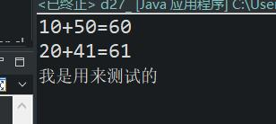
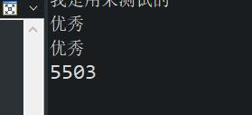

原文出处:本文由博客园博主心悦君兮君不知-睿提供。
原文连接:https://www.cnblogs.com/ruigege0000/p/11488565.html
原文连接:https://www.cnblogs.com/ruigege0000/p/11488565.html
一、方法注意点
（1）方法的调用不一定再main方法中，可以在其他方法中进行调用，只要是程序执行到的位置，都可以去调用其他方法。
（2）方法调用的时候，实参和形参要求个数对应相同，数据类型对应相同，方法不同的时候，要求能够进行相应的自动类型转换
（3）当方法的调用和方法在同一个类中的时候，“类名.”是可以省略不写的。
（4）建议在一个java文件中只定义一个类为好，不要定义多个类，这里只是举例，不建议模仿
例子：
public class d27_{
public static void main(String[] args) {
//调用方法
d27_.sum(10,50);
//对于方法的修饰符列表之中有static关键字：“类名.”是可以省略不写的
sum(20,41);
//调用其他类的方法
d27_2_.sum2();
//省略d27_2_这个类型进行调用的时候（即：直接写sum2()），那么就会编译报错,只能在同一类中才能省略
//sum2();
}
public static void sum(long a,long b) {
System.out.println(a + "+" + b + "=" + (a+b));
}
}
class d27_2_{
public static void sum2() {
System.out.println("我是用来测试的");
}
public static void sum(long a,long b) {
System.out.println(a + "+" + b + "=" + (a+b));
}
}
（5）一个方法发有返回值的时候，当我们调用这个方法的时候，方法返回了一个值，对于调用者来说，这个返回值是可以进行选择接收的，也可以选择不接收，但是大部分情况下我们是接收的。
public static void main(String[] args) {
sum3(10,55);//这里没有接收这个方法的返回值
int af = sum3(45,5458);
System.out.println(af);
}
public static int sum3(int a, int b) {
System.out.println("优秀");
return a + b;
}

（6）带有return关键字的java语句只要执行，所在的方法就执行结束了，在“同一作用域中”return语句下面不能编写任何代码，因为这些代码会永远都不会被执行，所以编译会报错。
举一个例子：这个例子会编译报错，因为编译器认为不一定可以执行到return语句
public static void main(String[] args) {
sum4(23,23);
}
public static int sum4(int a,int b) {
if (a<23){
return 2;
}
}
我们改一下就行，下面三种方法等价
public static int sum4(int a,int b) {
if (a<23){
return 2;
}else{
return 3;
}
public static int sum4(int a,int b) {
if (a<23){
return 2;
}
return 3;
public static int sum4(int a,int b) {
return a<23 ? 2:3;
二、源码：
d27_method_anlysis_extend.java
地址：
https://github.com/ruigege66/Java/blob/master/d27_method_anlysis_extend.java
2.CSDN：https://blog.csdn.net/weixin_44630050（心悦君兮君不知-睿）
3.博客园：https://www.cnblogs.com/ruigege0000/
4.欢迎关注微信公众号：傅里叶变换，后台回复”礼包“，获取大数据学习资料